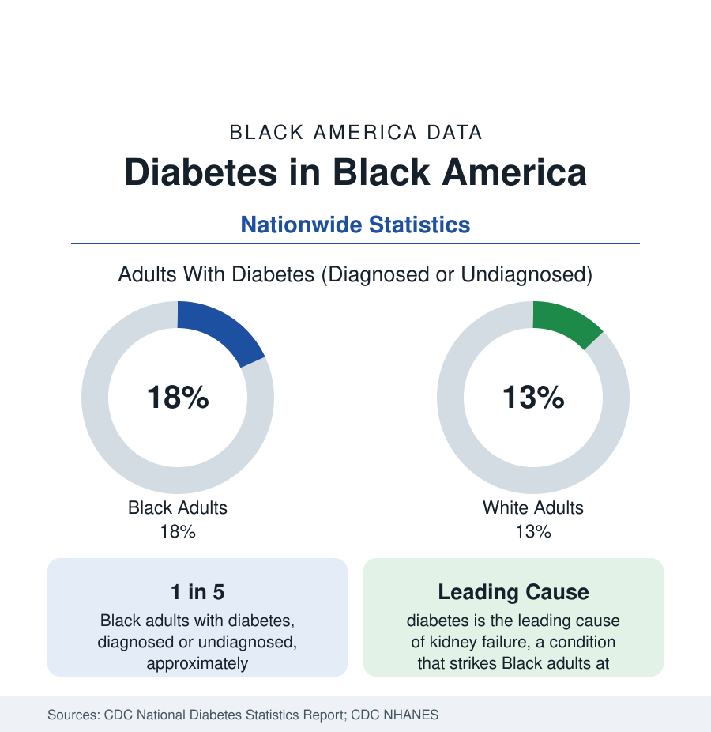

Black Public Health
Diabetes Among Black Adults: Prevalence and Complications
Nearly one in five Black adults has diabetes, diagnosed or undiagnosed — and its complications fall with particular weight. The CDC data on prevalence, control, and outcomes.

Diabetes is the second anchor condition of Black public health data, after hypertension, and the two are tightly linked: they share risk factors, frequently occur together, and drive the same downstream diseases. By the Centers for Disease Control and Prevention's accounting, nearly one in five Black adults — about 18 percent — has diabetes when diagnosed and undiagnosed cases are counted together, against about 13 percent of White adults. Diagnosed diabetes alone affects roughly 13 percent of Black adults. This article summarizes the prevalence data, the pattern of onset, and the complication rates that make diabetes a central measure of Black population health.
Types and Definitions
The statistics in this article concern type 2 diabetes unless stated otherwise; it accounts for more than 90 percent of all diabetes. Type 2 develops when the body resists insulin or produces too little of it, raising blood glucose over years, usually without symptoms in its early stages — which is why undiagnosed diabetes is a meaningful share of the total and why survey estimates that test blood samples, as the National Health and Nutrition Examination Survey does, run higher than counts of diagnosed cases alone. Prediabetes, the intermediate state of elevated glucose below the diabetes threshold, affects a substantially larger share of adults and identifies the population at highest risk of progression.
Prevalence and Onset
Black adults develop type 2 diabetes at higher rates and at younger ages than White adults. The gap appears in childhood and adolescence, where type 2 — once rare in the young — is recorded disproportionately among Black youth, and it widens through middle age, when Black prevalence peaks at levels well above the White rate. Federal health agencies attribute the pattern to interacting causes: higher average rates of obesity, differences in fat distribution and insulin physiology, dietary and built-environment exposures, chronic stress, and the strong hereditary component of the disease, which makes family history a more powerful predictor in high-prevalence populations.
Control and Management
Diabetes outcomes turn on control of blood glucose, conventionally measured by the A1C test, and the control data show the familiar pattern of this reference's health articles: diagnosis rates are comparatively good, while control lags. Black adults with diabetes record average A1C levels above those of White adults with the condition, and lower rates of control to target. Management is demanding — daily medication, monitoring, dietary change, foot and eye examinations, and regular clinical follow-up — and each element depends on the access variables of insurance coverage, pharmacy access, and primary care supply that the health section's access articles measure directly.
Complications
The complications of diabetes are where its population cost concentrates, and where the racial gaps are widest. Diabetes is the leading cause of kidney failure in the United States, and Black adults — who develop kidney failure at roughly three times the White rate — account for a share of dialysis patients far above their population share, with diabetes and hypertension as the two driving causes. Diabetes roughly doubles cardiovascular risk in a population already carrying the hypertension burden described in this section. It is a leading cause of new blindness in working-age adults, with diabetic eye disease recorded at higher rates among Black patients, and it drives lower-limb amputations, which occur at markedly higher rates among Black adults with diabetes — one of the starkest single disparities in the clinical literature.
The Trend and the Response
Nationally, the incidence of new diabetes cases has leveled and by some measures declined from its peak, even as prevalence remains high because people live longer with the disease. Prevention trials have shown that structured lifestyle programs cut progression from prediabetes by more than half, and federal prevention programs now operate nationally, with enrollment and outcomes tracked by the CDC. The data priorities in this area — and the subjects of the related articles in this section — are the prediabetes population, the geography of diabetes in the Black South, sometimes called the diabetes belt, and the complication rates by which progress should be judged.
In sum: diabetes affects nearly one in five Black adults, arrives earlier, is controlled less often to target, and produces its worst complications — kidney failure, amputation, vision loss, cardiovascular disease — at rates well above national figures. Together with hypertension, it defines the chronic-disease core of Black public health, and the two conditions' data should be read as one connected account.
More in Black Public Health
Hypertension Among Black Adults: Prevalence, Control, and Consequences
About 55 percent of Black adults have hypertension — the highest rate of any U.S. group. Prevalence, onset, control, and the stroke, heart, and kidney consequences in the data.
Black Life Expectancy: The Gap at Birth and Its Causes
Black life expectancy at birth is about 73 years, roughly five years below the national figure — the summary measure of every health gap in this section. The CDC data.
Health Insurance Coverage Among Black Americans
About one in ten Black Americans is uninsured. Employer plans cover about half, and Medicaid covers roughly one in five — the coverage data behind every health statistic on this site.
Source: CDC, National Diabetes Statistics Report; CDC, National Health and Nutrition Examination Survey (NHANES).